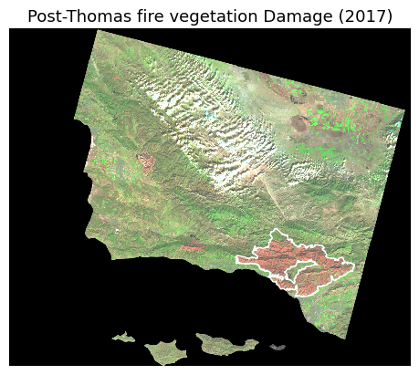
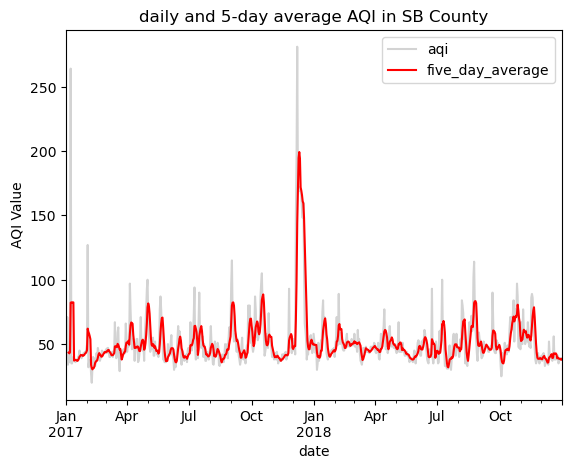
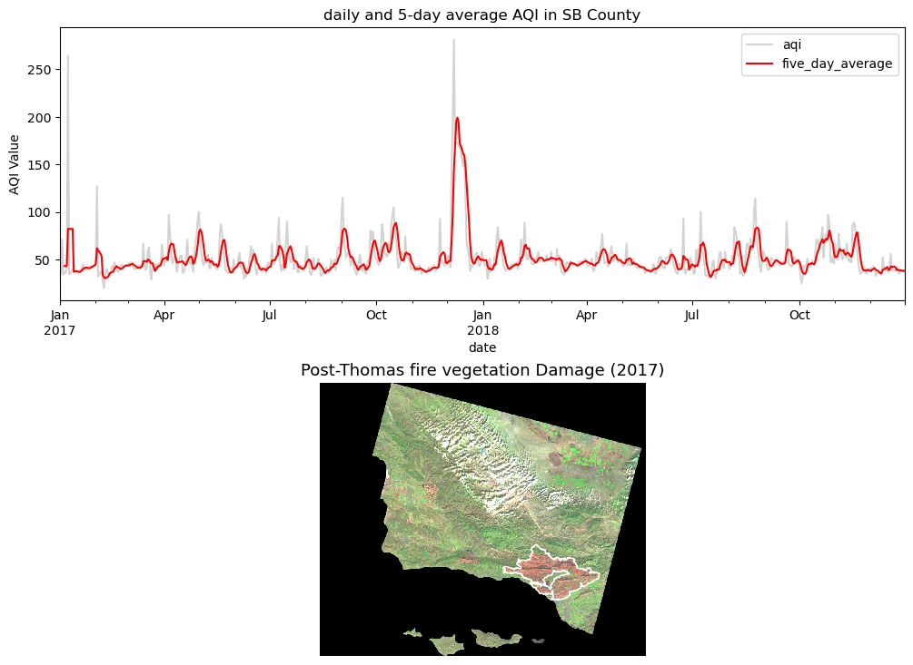

# importing all neccessary packages
import os
import numpy as np
import pandas as pd
import geopandas as gpd
import matplotlib.pyplot as plt
# for raster
import rioxarray as rioxr
#for geometry in geopandas
from shapely.geometry import Polygon
from shapely.geometry import Point
from shapely.geometry import box
#now going to read in my data
#url for aqi_2017
#url_17 = 'https://aqs.epa.gov/aqsweb/airdata/daily_aqi_by_county_2017.zip'
aqi_17 = pd.read_csv('data/aqi_17_18/daily_aqi_by_county_2017.csv')
#url for aqi_18
#url_18 = 'https://aqs.epa.gov/aqsweb/airdata/daily_aqi_by_county_2018.zip'
aqi_18 = pd.read_csv('data/aqi_17_18/daily_aqi_by_county_2018.csv')
#reading in the landsat data
path = os.path.join(os.getcwd(),'data','landsat_8','landsat8-2018-01-26-sb-simplified.nc')
landsat = rioxr.open_rasterio(path)
# checking to make sure that everything looks good
landsat
#reading in the california fire perimeter for this
ca = gpd.read_file('data/ca_fire_perimeter/California_Fire_Perimeters_2017.shp')Air Quality Index of Santa Barbara County during the 2017 Thomas Fire
Author: Rosemary Juarez
Link to github repo: github repo
Purpose
In December of 2017, The Thomas fire burned throughout Santa Barbara and Ventura county, creating distress and destructing in its wake. This wildfire was one of multiple wildfires occuring in California, making this a hotter topic throughout the years. As a native Ventura county resident, I have seen the effects this wildfire has caused in the community. Not only did I have to miss school, but my parents and I were forced to shelter indoors as the air quality grew worse. With the sky burning blood red for a few days, and smoke hazes filling up the streets of Oxnard, my curiosity grew more. Now that I have a chance to explore what exactly was going due to having data science experience, I can now vizualize the Thomas’s fire impact through air quality. My interest in collecting the air quality during this time can shed light on the correlation between wildfires and air quality. I want to investigate how the Thomas Fire impacted the AQI in Santa Barbara county using public data provided by US Environmental Protection Agency.
Highlights:
- vizualize raster data
- Time series analysis
- geospatial analysis
- remote sensing analysis
- False Color Imagery
Dataset Description
Landsat 8 imagery:
For raster data, this originated from NASA’s Earth Observatory. The landsat imagery has a collection of bands (red, green, blue, near-infrared and shortwave infrared) from the Landsat Collection 2 Level-2 atmosperically corrected surface reflectance data, collected by the Landsat 8 satellite. the landsat imagery used in this report is post-2017
Thomas Fire Perimeter:
For our Vector data, the Thomas fire perimeter polygon came from the CA State Geoportal, which comes with multiple fire perimeters.
Air Quality Index
The Air Quality Index (AQI) data from the US Environmental Protection Agency. This data provides AQI coverage period from 2017 - 2018.
References to datasets
Landsat 8 imagery: https://planetarycomputer.microsoft.com/dataset/landsat-c2-l2
Thomas Fire Perimeter: https://gis.data.ca.gov/datasets/CALFIRE-Forestry::california-fire-perimeters-all-1/about
AQI: https://aqs.epa.gov/aqsweb/airdata/download_files.html#AQI
Importing Data
We will first focus on importing all necessary data required for running this report. We must first import all important packages required to read and run the datasets. There will be a combination of vector and raster data.
Geographical context of data
Since We are primarily exploring Santa Barbara county, our focus should be in this region. In the case of our landsat imagery, we are given a wide 30m x 30m pixel dimension of our area, giving us a relatively good spatial resolution for the area we are interested. As for the fire perimeter, we will need to filter our data to only include the Thomas fire. This will show us only the fire perimeter of Thomas fire, which includes SB and Ventura county. Our AQI data is not spatial, therefore we do not need to explain further geographical context except that we will filter to only include santa barbara county.
For data wrangling, we will be using numpy’s methods of squeeze() and drop() to remove band coordinates from our landsat data. We use rioxarray to manipulate our raster data. Lastly, matplotlib.pyplot is used to plot our raster map
#first need to wrangle data
# and here i am just squeezing and dropping unneccesary data information, such as the band coordinates
landsat = landsat.squeeze()
landsat = landsat.drop('band')
#filtering for thomas fire only
thomas = ca[ca.FIRE_NAME == 'THOMAS']
#changing the crs to landsat so that it aligns well
thomas = thomas.to_crs(landsat.rio.crs)
# Customizing my map now to highlight thomas fire and the vegetation
fig, ax = plt.subplots()
landsat[['swir22', 'nir08', 'red']].to_array().plot.imshow(robust = True)
thomas.plot(ax = ax,
edgecolor = 'white',
facecolor = 'none')
ax.set_title('Post-Thomas fire vegetation Damage (2017)', fontsize=13)
ax.axis('off')
plt.show()
figure 1: The map above shows the region in which the Thomas fire burned. The city of Ojai was surrounded by the Thomas fire, as seen to be the gap in between the red features. The red mark on the map shows vegetation damaged caused by the thomas fire.
Data Exploration
Now that we established our geographic area of interest, we now shift towards looking at the Air Quality Index or AQI of Santa Barbara County. For this, we require more data exploration on our end, as this requires filtering and merging datasets in order to accomplish a time series as our final output.
Our time series will cover the air quality index from 2017 to 2018 to give us insight and analyze patterns noted before, during, and after the Thomas fire. This will involve more data wrangling to vizualize what we want. This includes using pandas package for pd.groupby(), and pd.to_datetime for some of our changes. Other data cleanup includes filtering for santa barbara county and renaming columns
#finding the mean aqi by county
aqi_17.groupby('county Name').mean('AQI')
# concatanating two dataframes together
aqi = pd.concat([aqi_17, aqi_18])
# re-assign the column names - .str.lower() makes them lower case
aqi.columns = aqi.columns.str.lower()
# re-assign the column names again
aqi.columns = aqi.columns.str.replace(' ','_')
# selecting data from SB county using conditionals
aqi_sb = aqi[aqi.county_name == 'Santa Barbara']
#removing columns using.drop()
aqi_sb = aqi_sb.drop(columns = ['state_name', 'county_name', 'state_code', 'county_code'])
#changing to datetime for date
aqi_sb['date'] = pd.to_datetime(aqi_sb.date)
#reseting aqi index
aqi_sb.reset_index(inplace = True, drop = True)
# adding the new column by updating it
aqi_sb['five_day_average'] = aqi_sb.aqi.rolling(window = 5).mean()
#plot
#creating colors first for the lines
colors = {'aqi': '#d3d3d3',
'five_day_average': 'red'}
#line plot of the AQI using the new column i just added
aqi_sb.plot(kind = 'line',
x = 'date',
y = ['aqi', 'five_day_average'],
color = colors,
title ='daily and 5-day average AQI in SB County',
ylabel = 'AQI Value')
plt.show()
figure 2: time series coverage from 2017-2018 on AQI in Santa Barbara. There is a spike in Air Quality during Thomas Fire
analysis
We find that during the end of December of 2017, the AQI peaked approximately past the value of 250. According to the EPA, a value higher than 200 is considered ‘very unhealthy’, and could pose health risks to those exposed. Given that we see that there were high AQI values during the Thomas Fire, we can assume that there is correlation between the two. WE clearly see an impact from the fires affecting the AQI.
Our false color imagery depicting the Thomas Fire scars reveals the extent of recent damage done to the vegetation during post-wilfire. Since the vegetation scars coincide with the fire perimeter of Thomas fires, we can also conclude that the fire caused those scars. Overall, the impact Thomas Fire caused to AQI is clear, and we can visually represent it.
Final Output
fig, (ax1, ax2) = plt.subplots(2,1, figsize=(12,9))
# AQI plot
aqi_sb.plot(ax = ax1,
kind = 'line',
x = 'date',
y = ['aqi', 'five_day_average'],
color = colors,
title ='daily and 5-day average AQI in SB County',
ylabel = 'AQI Value')
#------------------------------------------------------------------------
# False Color Imagery
landsat[['swir22', 'nir08', 'red']].to_array().plot.imshow(robust = True)
thomas.plot(ax = ax2,
edgecolor = 'white',
facecolor = 'none',
)
fig.subplots_adjust(hspace=.3)
ax2.set_title('Post-Thomas fire vegetation Damage (2017)', fontsize=13)
ax2.axis('off')
plt.show()
figure 3: final output depicting the AQI in Santa Barbara County and the spatial vizualization of the Thomas Fire’s damage and extent
Citations
US Environmental Protection Agency. Air Quality System Data Mart. available via https://www.epa.gov/outdoor-air-quality-data. Accessed November 28, 2023.
CALFIRE, USDA Forest Service, other Federal Partners. California Fire Perimeters(All). Available via https://gis.data.ca.gov/maps/CALFIRE-Forestry::california-fire-perimeters-all/about. Accessed November 28, 2023.
NASA, USGS, Microsoft. Landsat Collection 2 Level-2 Science products. Available via https://planetarycomputer.microsoft.com/dataset/landsat-c2-l2. Accessed November 28, 2023.